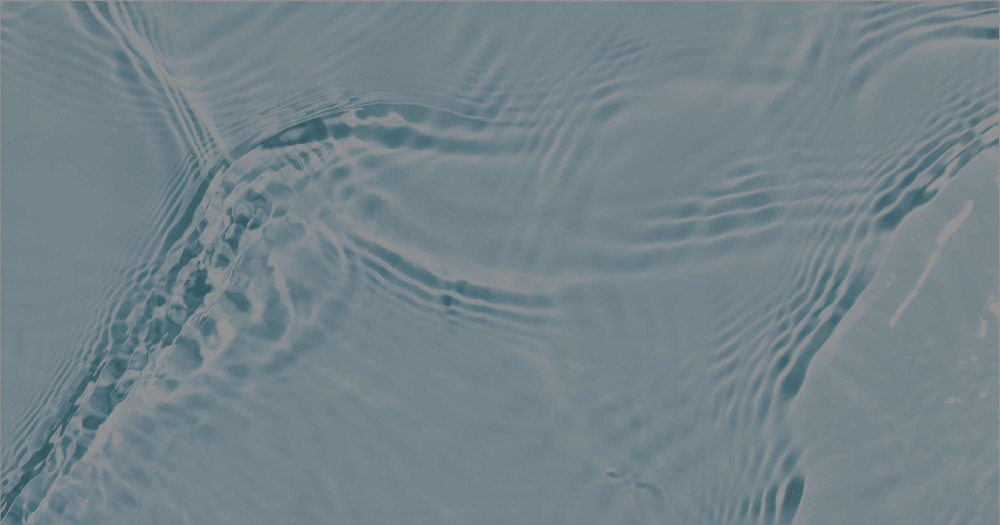
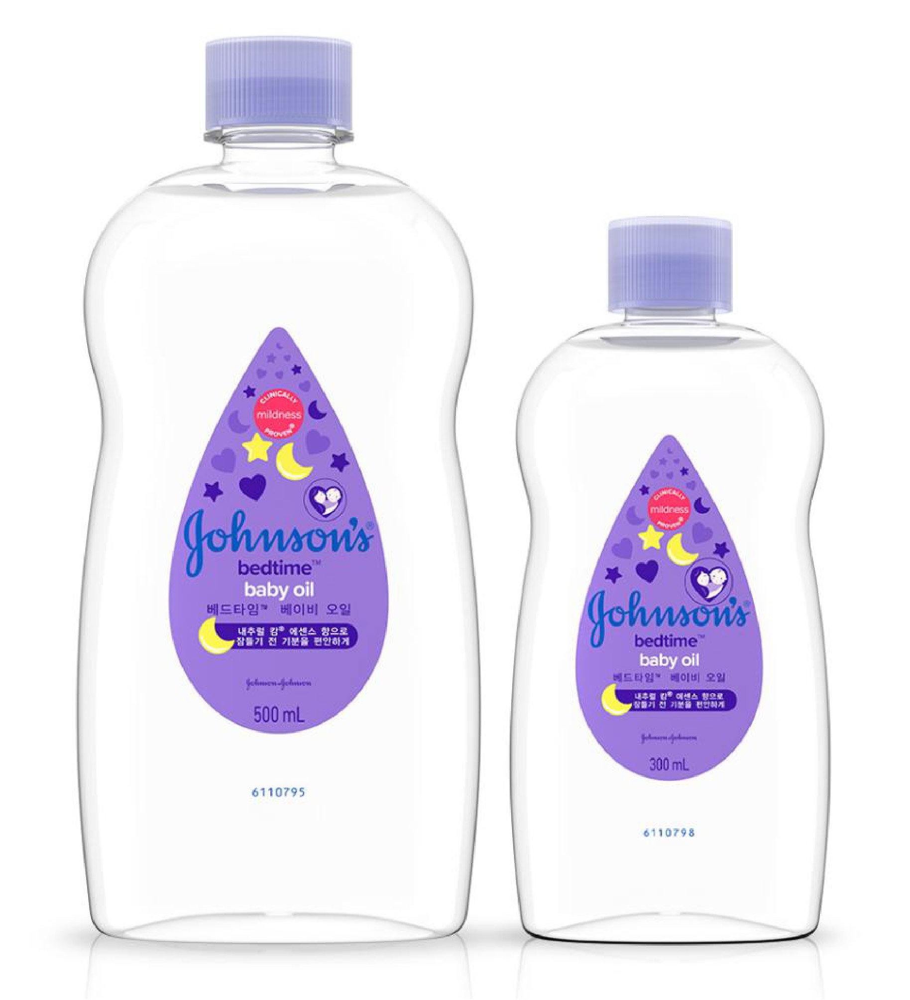

Natural Ingredients
존슨즈의 워시,로션 및 샴푸 함유 성분의 90%
이상이 자연유래성분입니다.
90% 자연유래 성분의 존슨즈®
존슨즈®는 세계적인 안전 기준에 부합합니다.
존슨즈®는 자연유래 화장품에 대해
국제 표준화 기구(ISO)의 독자적인 기준을 준수합니다.
ISO에 의하면, ‘자연 유래 성분’은 식물이나 미네랄과 같은
자연적인 원천이 50% 이상을 차지하는 성분을 말합니다.
이 기준에 의하면, 존슨즈®의 워시,
로션 및 샴푸 함유 성분의 90%*이상이 자연 유래 성분입니다 .
자연유래 성분은 원료 그대로의 상태로 아기 피부에
사용하기에 항상 안전한 것은 아닙니다.
이러한 이유로 존슨즈는 제품에 성분을 추가하기 전,
아래의 4가지를 만족시키기 위해 엄격한 테스트 과정을 거칩니다.